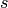
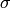
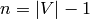
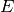
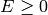
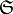
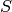
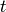

Welcome to Sage Sandpiles’s documentation!¶
Introduction¶
Sage Sandpiles is a package for calculations involving Dhar’s abelian sandpile model (ASM) using the open-source mathematics software, Sage. A brief introduction to the ASM follows. For a more thorough introduction, the papers Chip-Firing and Rotor-Routing on Directed Graphs [H], by Holroyd et al. and Riemann-Roch and Abel-Jacobi Theory on a Finite Graph by Baker and Norine [BN] are recommended.
To describe the ASM, we start with a sandpile graph: a directed multigraph
with a vertex  that is accessible from every vertex (except
possible , itself). By multigraph, we mean that each edge of is
assigned a nonnegative integer weight. To say is accessible from some
vertex  means that there is a sequence of directed edges starting at and
ending at . We call the sink of the sandpile graph, even though it might have outgoing edges, for reasons that will be made clear in a moment.
means that there is a sequence of directed edges starting at and
ending at . We call the sink of the sandpile graph, even though it might have outgoing edges, for reasons that will be made clear in a moment.
We denoted the vertices of by  and define .
and define .
Configurations and divisors¶
A configuration on is an element of , i.e., the assignment of a nonnegative integer to each nonsink vertex. We think of each integer as a number of grains of sand being placed at the corresponding vertex. A divisor on is an element of , i.e., an element in the free abelian group on all of the vertices. In the context of divisors, it is sometimes useful to think of assigning dollars to each vertex, with negative integers signifying a debt.
Stabilization¶
A configuration  is stable at a vertex if
, and itself is stable if it is stable at each
nonsink vertex. Otherwise, is unstable. If is unstable at , the vertex can be fired
(toppled) by removing grains of sand from and
adding grains of sand to the neighbors of sand, determined by the weights of
the edges leaving .
is stable at a vertex if
, and itself is stable if it is stable at each
nonsink vertex. Otherwise, is unstable. If is unstable at , the vertex can be fired
(toppled) by removing grains of sand from and
adding grains of sand to the neighbors of sand, determined by the weights of
the edges leaving .
Despite our best intentions, we sometimes consider firing a stable vertex, resulting in a configuration with a “negative amount” of sand at that vertex. We may also reverse-firing a vertex, absorbing sand from the vertex’s neighbors.
Example. Consider the graph:
All edges have weight  except for the edge from vertex 1 to vertex 3,
which has weight
except for the edge from vertex 1 to vertex 3,
which has weight  . If we let with the indicated number of
grains of sand on vertices 1, 2, and 3, respectively, then only vertex 1,
whose out-degree is 4, is unstable. Firing vertex 1 gives a new
configuration . Here, grains have left vertex 1. One of
these has gone to the sink vertex (and forgotten), one has gone to vertex 1,
and two have gone to vertex 2, since the edge from 1 to 2 has weight 2.
Vertex 3 in the new configuration is now unstable. The Sage code for this
example looks like this:
. If we let with the indicated number of
grains of sand on vertices 1, 2, and 3, respectively, then only vertex 1,
whose out-degree is 4, is unstable. Firing vertex 1 gives a new
configuration . Here, grains have left vertex 1. One of
these has gone to the sink vertex (and forgotten), one has gone to vertex 1,
and two have gone to vertex 2, since the edge from 1 to 2 has weight 2.
Vertex 3 in the new configuration is now unstable. The Sage code for this
example looks like this:
Create the sandpile:
sage: load sandpile.sage
sage: g = {'sink':{},
1:{'sink':1, 2:1, 3:2},
2:{1:1, 3:1},
3:{1:1, 2:1}}
sage: S = Sandpile(g, 'sink')
sage: S.show(edge_labels=true) # to display the graph
Create the configuration:
sage: c = Config(S, {1:5, 2:0, 3:1})
sage: S.out_degree()
{1: 4, 2: 2, 3: 2, 'sink': 0}
Fire vertex one:
sage: c.fire_vertex(1,c)
{1: 1, 2: 1, 3: 3}
The configuration is unchanged:
sage: c
{1: 5, 2: 0, 3: 1}
Repeatedly fire vertices until the configuration becomes stable:
sage: c.stabilize()
{1: 2, 2: 1, 3: 1}
Alternatives:
sage: ~c # shorthand for c.stabilize()
{1: 2, 2: 1, 3: 1}
sage: c.stabilize(with_firing_vector=true)
[{1: 2, 2: 1, 3: 1}, {1: 2, 2: 2, 3: 3}]
Since vertex 3 has become unstable after firing vertex 1, it can be fired, which causes vertex 2 to become unstable, etc. Repeated firings eventually lead to a stable configuration. The last line of the Sage code, above, is a list, the first element of which is the resulting stable configuration, . The second component records how many times each vertex fired in the stabilization.
Since the sink is accessible from each nonsink vertex and never fires, every configuration will stabilize after a finite number of vertex-firings. It is not obvious, but the resulting stabilization is independent of the order in which unstable vertices are fired. Thus, each configuration stabilizes to a unique stable configuration.
Laplacian¶
Fix an order on the vertices of . The Laplacian of is
where  is the diagonal matrix of out-degrees of the vertices and
is the diagonal matrix of out-degrees of the vertices and  is the
adjacency matrix whose -th entry is the weight of the edge from vertex
is the
adjacency matrix whose -th entry is the weight of the edge from vertex
 to vertex
to vertex  , which we take to be
, which we take to be  if there is no edge. The reduced
Laplacian, , is the submatrix of the Laplacian formed by removing
the row and column corresponding to the sink vertex. Firing a vertex of a
configuration is the same as subtracting the corresponding row of the reduced
Laplacian.
if there is no edge. The reduced
Laplacian, , is the submatrix of the Laplacian formed by removing
the row and column corresponding to the sink vertex. Firing a vertex of a
configuration is the same as subtracting the corresponding row of the reduced
Laplacian.
Example. (Continued.)
sage: S.vertices() # here is the ordering of the vertices
[1, 2, 3, 'sink']
sage: S.laplacian()
[ 4 -1 -2 -1]
[-1 2 -1 0]
[-1 -1 2 0]
[ 0 0 0 0]
sage: S.reduced_laplacian()
[ 4 -1 -2]
[-1 2 -1]
[-1 -1 2]
The configuration we considered previously:
sage: c = Config(S, [5,0,1])
sage: c
{1: 5, 2: 0, 3: 1}
Firing vertex 1 is the same as subtracting the
corresponding row from the reduced Laplacian:
sage: c.fire_vertex(1).values()
[1, 1, 3]
sage: S.reduced_laplacian()[0]
(4, -1, -2)
sage: vector([5,0,1]) - vector([4,-1,-2])
(1, 1, 3)
Recurrent elements¶
Imagine an experiment in which grains of sand are dropped one-at-a-time onto a graph, pausing to allow the configuration to stabilize between drops. Some configurations will only be seen once in this process. For example, for most graphs, once sand is dropped on the graph, no addition of sand+stabilization will result in a graph empty of sand. Other configurations—the so-called recurrent configurations—will be seen infinitely often as the process is repeated indefinitely.
To be precise, a configuration is recurrent if (i) it is stable, and (ii)
given any configuration  , there is a configuration
, there is a configuration  such that
, the stabilization of
such that
, the stabilization of  .
.
The maximal-stable configuration, denoted is defined by
for all nonsink vertices . It is clear that is recurrent. Further, it is not hard to see that a configuration is recurrent if and only if it has the form for some configuration .
Example. (Continued.)
sage: S.recurrents(verbose=false)
[[3, 1, 1], [2, 1, 1], [3, 1, 0]]
sage: c = Config(S, [2,1,1])
sage: c
{1: 2, 2: 1, 3: 1}
sage: S.is_recurrent(c)
True
sage: S.max_stable()
{1: 3, 2: 1, 3: 1}
Adding any configuration to the max-stable configuration and stabilizing
yields a recurrent configuration.
sage: x = Config(S, [1,0,0])
sage: x + S.max_stable()
{1: 4, 2: 1, 3: 1}
Use & to add and stabilize:
sage: c = x & S.max_stable()
sage: c
{1: 3, 2: 1, 3: 0}
sage: c.is_recurrent()
True
Note the various ways of performing addition + stabilization:
sage: (x + m).stabilize() == ~(x + m)
True
sage: (x + m).stabilize() == x & m
True
Burning Configuration¶
A burning configuration is a nonnegative integer-linear combination of the
rows of the reduced Laplacian matrix having nonnegative entries and such that
every vertex has a path from some vertex in its support. The corresponding
burning script gives the integer-linear combination needed to obtain the
burning configuration. So if is the burning configuration,  is its
script, and is the reduced Laplacian, then .
The minimal burning configuration is the one with the minimal script (its
components are no larger than the components of any other script for a burning
configuration).
The following are equivalent for a configuration with burning
configuration having script :
- stabilizes to
- the firing vector for the stabilization of is .
The burning configuration and script are computed using a modified version of Speer’s script algorithm. This is a generalization to directed multigraphs of Dhar’s burning algorithm.
Example.
sage: g = {0:{},1:{0:1,3:1,4:1},2:{0:1,3:1,5:1},
3:{2:1,5:1},4:{1:1,3:1},5:{2:1,3:1}}
sage: G = Sandpile(g,0)
sage: G.burning_config()
{1: 2, 2: 0, 3: 1, 4: 1, 5: 0}
sage: G.burning_config().values()
[2, 0, 1, 1, 0]
sage: G.burning_script()
{1: 1, 2: 3, 3: 5, 4: 1, 5: 4}
sage: G.burning_script().values()
[1, 3, 5, 1, 4]
sage: matrix(G.burning_script().values())*G.reduced_laplacian()
[2 0 1 1 0]
Sandpile group¶
The collection of stable configurations forms a commutative monoid with addition defined as ordinary addition followed by stabilization. The identity element is the all-zero configuration. This monoid is a group exactly when the underlying graph is a DAG (directed acyclic graph).
The recurrent elements form a submonoid which turns out to be a group. This group is called the sandpile group for , denoted . Its identity element is usually not the all-zero configuration (again, only in the case that is a DAG). So finding the identity element is an interesting problem.
Let  and fix an ordering of the nonsink vertices. Let denote the column-span of , the transpose of the reduced Laplacian. It is a theorem that
Thus, the number of elements of the sandpile group is , which by the matrix-tree theorem is the number of weighted trees directed into the sink.
Example. (Continued.)
sage: S.group_order()
3
sage: S.elementary_divisors()
[1, 1, 3]
sage: S.reduced_laplacian().dense_matrix().smith_form()
([1 0 0]
[0 1 0]
[0 0 3],
[ 0 0 1]
[ 1 0 0]
[ 0 1 -1],
[3 1 4]
[4 1 6]
[4 1 5])
Adding the identity to any recurrent configuration and stabilizing yields
the same recurrent configuration:
sage: S.identity()
{1: 3, 2: 1, 3: 0}
sage: i = S.identity()
sage: m = S.max_stable()
sage: i & m == m
True
Self-organized criticality¶
The sandpile model was introduced by Bak, Tang, and Wiesenfeld in the paper,
Self-organized criticality: an explanation of 1/ƒ noise [BTW]. The term
self-organized criticality has no precise definition, but can be
loosely taken to describe a system that naturally evolves to a state that is
barely stable and such that the instabilities are described by a power law.
In practice, self-organized criticality is often taken to mean like the
sandpile model on a grid-graph. The grid graph is just a grid with an extra
sink vertex. The vertices on the interior of each side have one edge to the
sink, and the corner vertices have an edge of weight . Thus, every nonsink
vertex has out-degree .
Imagine repeatedly dropping grains of sand on and empty grid graph, allowing the sandpile to stabilize in between. At first there is little activity, but as time goes on, the size and extent of the avalanche caused by a single grain of sand becomes hard to predict. Computer experiments—I do not think there is a proof, yet—indicate that the distribution of avalanche sizes obeys a power law with exponent -1. In the example below, the size of an avalanche is taken to be the sum of the number of times each vertex fires.
Example.
Distribution of avalanche sizes:
sage: S = grid(10,10)
sage: m = S.max_stable()
sage: a = []
sage: for i in range(10000):
... m = m.add_random()
... m, f = m.stabilize(true)
... a.append(sum(f.values()))
...
sage: p = list_plot([[log(i+1),log(a.count(i))] for i in [0..max(a)] if a.count(i)])
sage: p.axes_labels(['log(N)','log(D(N))'])
sage: p
Distribution of avalanche sizes
Note: In the above code, m.stabilize(true) returns a list consisting of the stabilized configuration and the firing vector. (Omitting true would give just the stabilized configuration.)
Divisors and Discrete Riemann surfaces¶
A reference for this section is Riemann-Roch and Abel-Jacobi theory on a finite graph [BN].
A divisor on is an element of the free abelian group on its
vertices, including the sink. Suppose, as above, that the vertices of
have been ordered, and that is the column span of the
transpose of the Laplacian. A divisor is then identified with an element
and two divisors are linearly equivalent if they
differ by an element of . A divisor  is effective, written
, if for each  , i.e., if .
The degree of a divisor, , is . The
divisors of degree zero modulo linear equivalence form the Picard group, or
Jacobian of the graph. For an undirected graph, the Picard group is
isomorphic to the sandpile group.
, i.e., if .
The degree of a divisor, , is . The
divisors of degree zero modulo linear equivalence form the Picard group, or
Jacobian of the graph. For an undirected graph, the Picard group is
isomorphic to the sandpile group.
The complete linear system for a divisor , denoted , is the
collection of effective divisors linearly equivalent to
Riemann-Roch¶
To describe the Riemann-Roch theorem in this context, suppose that is
an undirected, unweighted graph. The dimension, of the linear system
is  if and otherwise is the greatest integer such
that for all effective divisors of degree . Define the
canonical divisor by and the genus by . The Riemann-Roch theorem says that for any divisor ,
if and otherwise is the greatest integer such
that for all effective divisors of degree . Define the
canonical divisor by and the genus by . The Riemann-Roch theorem says that for any divisor ,
Example. (Some of the following calculations require the installation of 4ti2.)
The sandpile on the complete graph on 5 vertices:
sage: G = complete_sandpile(5)
The genus (num_edges method counts each undirected edge twice):
sage: g = G.num_edges()/2 - G.num_verts() + 1
A divisor on the graph:
sage: D = Divisor(G, [1,2,2,0,2])
Verify the Riemann-Roch theorem:
sage: K = G.canonical_divisor()
sage: D.r_of_D() - (K - D).r_of_D() == D.deg() + 1 - g
True
The effective divisors linearly equivalent to D:
sage: [E.values() for E in D.effective_div()]
[[0, 1, 1, 4, 1], [4, 0, 0, 3, 0], [1, 2, 2, 0, 2]]
The nonspecial divisors up to linear equivalence (divisors of degree
g-1 with empty linear systems)
sage: N = G.nonspecial_divisors()
sage: [E.values() for E in N[:5]] # the first few
[[-1, 2, 1, 3, 0],
[-1, 0, 3, 1, 2],
[-1, 2, 0, 3, 1],
[-1, 3, 1, 2, 0],
[-1, 2, 0, 1, 3]]
sage: len(N)
24
sage: len(N) == G.h_vector()[-1]
True
Picturing linear systems¶
Fix a divisor . There are at least two natural graphs associated with
linear system associated with . First, consider the directed graph with
vertex set and with an edge from vertex to vertex  if is
attained from by firing a single unstable vertex.
if is
attained from by firing a single unstable vertex.
sage: S = Sandpile(graphs.CycleGraph(6),0)
sage: D = Divisor(S, [1,1,1,1,2,0])
sage: D.is_alive()
True
sage: eff = D.effective_div()
sage:
firing_graph(S,eff).show3d(edge_size=.005,vertex_size=0.01,iterations=500)

Complete linear system for (1,1,1,1,2,0) on  : single firings
: single firings
The second graph has the same set of vertices but with an edge from to
if is obtained from by firing all unstable vertices of .
sage: S = Sandpile(graphs.CycleGraph(6),0)
sage: D = Divisor(S, [1,1,1,1,2,0])
sage: eff = D.effective_div()
sage: parallel_firing_graph(S,eff).show3d(edge_size=.005,vertex_size=0.01,iterations=500)
Complete linear system for (1,1,1,1,2,0) on : parallel firings
Note that in each of the examples, above, starting at any divisor in the linear system and following edges, one is eventually led into a cycle of length 6 (cycling the divisor (1,1,1,1,2,0)). Thus, D.alive() returns True. In Sage, one would be able to rotate the above figures to get a better idea of the structure.
Algebraic geometry of sandpiles¶
A reference for the following material is in the works [PPW].
Affine¶
Let , and fix an ordering on the nonsink vertices of . let
 denote the column-span of
, the transpose of the reduced Laplacian. Label vertex with the
indeterminate
denote the column-span of
, the transpose of the reduced Laplacian. Label vertex with the
indeterminate  , and let .
(Here, denotes the sink vertex of .) The sandpile ideal or
toppling ideal, first studied by Cori, Rossin, and Salvy [CRS] for undirected graphs, is the lattice ideal for :
, and let .
(Here, denotes the sink vertex of .) The sandpile ideal or
toppling ideal, first studied by Cori, Rossin, and Salvy [CRS] for undirected graphs, is the lattice ideal for :
where for .
For each define where and so that . Then, for each , define . It then turns out that

where is the -th standard basis vector and is any burning
configuration.
The affine coordinate ring, is isomorphic to the group algebra of the sandpile group,
The standard term-ordering on is graded reverse lexigraphical order with if vertex is further from the sink than vertex . (There are choices to be made for vertices equidistant from the sink). If is the script for a burning configuration (not necessarily minimal), then
is a Groebner basis for  .
.
Projective¶
Now let , where
corresponds to the sink vertex. The homogeneous sandpile ideal, denoted
, is obtaining by homogenizing with respect to . Let be the
(full) Laplacian, and  be the column span of
its transpose, Then is the lattice ideal for :
be the column span of
its transpose, Then is the lattice ideal for :
This ideal can be calculated by saturating the ideal
with respect to the product of the indeterminates: (extending
the  operator in the obvious way). A Groebner basis with respect to the
degree lexicographic order describe above (with the smallest vertex), is
obtained by homogenizing each element of the Groebner basis for the
non-homogeneous sandpile ideal with respect to
operator in the obvious way). A Groebner basis with respect to the
degree lexicographic order describe above (with the smallest vertex), is
obtained by homogenizing each element of the Groebner basis for the
non-homogeneous sandpile ideal with respect to
Example.
sage: g = {0:{},1:{0:1,3:1,4:1},2:{0:1,3:1,5:1},
3:{2:1,5:1},4:{1:1,3:1},5:{2:1,3:1}}
sage: S = Sandpile(g, 0)
sage: S.ring()
Multivariate Polynomial Ring in x5, x4, x3, x2, x1, x0 over Rational Field
The homogeneous sandpile ideal:
sage: S.ideal()
Ideal (x2 - x0, x3^2 - x5*x0, x5*x3 - x0^2, x4^2 - x3*x1, x5^2 - x3*x0, x1^3 - x4*x3*x0, x4*x1^2 - x5*x0^2)
of Multivariate Polynomial Ring in x5, x4, x3, x2, x1, x0 over Rational Field
The generators of the ideal:
sage: S.ideal(true)
(x2 - x0,
x3^2 - x5*x0,
x5*x3 - x0^2,
x4^2 - x3*x1,
x5^2 - x3*x0,
x1^3 - x4*x3*x0,
x4*x1^2 - x5*x0^2)
Its resolution:
sage: S.resolution()
'R <-- R^7 <-- R^19 <-- R^25 <-- R^16 <-- R^4'
and Betti table:
sage: S.betti()
0 1 2 3 4 5
------------------------------------------
0: 1 1 - - - -
1: - 4 6 2 - -
2: - 2 7 7 2 -
3: - - 6 16 14 4
------------------------------------------
total: 1 7 19 25 16 4
The Hilbert function:
sage: S.hilbert_function()
[1, 5, 11, 15]
and its first differences (which counts the number of superstable
configurations in each degree):
sage: S.h_vector()
[1, 4, 6, 4]
sage: x = [sum(i) for i in S.superstables(False)]
sage: sorted(x)
[0, 1, 1, 1, 1, 2, 2, 2, 2, 2, 2, 3, 3, 3, 3]
The degree in which the Hilbert function equals the Hilbert polynomial, the
latter always being a constant in the case of a sandpile ideal:
sage: S.postulation()
3
Zeros¶
The zero set for the sandpile ideal is
the set of simultaneous zeros of the polynomials in Letting denote
the unit circle in the complex plane, is a finite
subgroup of , isomorphic to the
sandpile group. The zero set is actually linearly isomorphic to a faithful representation of the sandpile group on 
Example. (Continued.)
sage: S = Sandpile({0: {}, 1: {2: 2}, 2: {0: 4, 1: 1}}, 0)
sage: S.ideal().gens()
(x1^2 - x2^2, x1*x2^3 - x0^4, x2^5 - x1*x0^4)
Approximation to the zero set (setting ``x_0 = 1``):
sage: S.solve()
[[0.707107*I - 0.707107, 0.707107 - 0.707107*I],
[-0.707107*I - 0.707107, 0.707107*I + 0.707107],
[-1*I, -1*I],
[I, I],
[0.707107*I + 0.707107, -0.707107*I - 0.707107],
[0.707107 - 0.707107*I, 0.707107*I - 0.707107],
[1, 1],
[-1, -1]]
sage: len(_) == S.group_order()
True
The zeros are generated as a group by a single vector:
sage: S.points()
[[e^(1/4*I*pi), e^(-3/4*I*pi)]]
Resolutions¶
The homogeneous sandpile ideal, , has a free resolution graded by the divisors on modulo linear equivalence. (See the section on Discrete Riemann Surfaces for the language of divisors and linear equivalence.) Let , as above, and let  denote the group of divisors modulo rational equivalence. Then  is graded by by letting for each monomial . The minimal free resolution of has the form
where the  are the Betti numbers for .
are the Betti numbers for .
For each divisor class , define a simplicial complex,
The Betti number equals the dimension over of the
-th reduced homology group of :
sage: S = Sandpile({0:{},1:{0: 1, 2: 1, 3: 4},2:{3: 5},3:{1: 1, 2: 1}},0)
Representatives of all divisor classes with nontrivial homology:
sage: p = S.betti_complexes()
sage: p[0]
[{0: -8, 1: 5, 2: 4, 3: 1},
Simplicial complex with vertex set (0, 1, 2, 3) and facets {(1, 2), (3,)}]
The homology associated with the first divisor in the list:
sage: D = p[0][0]
sage: S.effective_div(D)
[{0: 0, 1: 1, 2: 1, 3: 0}, {0: 0, 1: 0, 2: 0, 3: 2}]
sage: [S.support(E) for E in S.effective_div(D)]
[[1, 2], [3]]
sage: S.Dcomplex(D)
Simplicial complex with vertex set (0, 1, 2, 3) and facets {(1, 2), (3,)}
sage: S.Dcomplex(D).homology()
{0: Z, 1: 0}
The minimal free resolution:
sage: S.resolution()
'R <-- R^5 <-- R^5 <-- R^1'
sage: S.betti()
0 1 2 3
------------------------------
0: 1 - - -
1: - 5 5 -
2: - - - 1
------------------------------
total: 1 5 5 1
sage: len(p)
11
The degrees and ranks of the homology groups for each element of the list p
(compare with the Betti table, above):
sage: [[sum(d[0].values()),d[1].betti()] for d in p]
[[2, {0: 1, 1: 0}],
[3, {0: 0, 1: 1, 2: 0}],
[2, {0: 1, 1: 0}],
[3, {0: 0, 1: 1, 2: 0}],
[2, {0: 1, 1: 0}],
[3, {0: 0, 1: 1, 2: 0}],
[2, {0: 1, 1: 0}],
[3, {0: 0, 1: 1}],
[2, {0: 1, 1: 0}],
[3, {0: 0, 1: 1, 2: 0}],
[5, {0: 0, 1: 0, 2: 1}]]
Complete Intersections and Arithmetically Gorenstein toppling ideals¶
NOTE: in the previous section note that the resolution always has length n since the ideal is Cohen-Macaulay.
To do.
Betti numbers for undirected graphs¶
To do.
Installation¶
It is assumed that Sage is already installed. If not, please see the main Sage homepage for installation instructions. To use sandpile.sage:
- download sandpile.sage
- start Sage, and issue the command
sage: load sandpile.sage
You may need to give the full path name to sandpile.sage.
Warning
The methods for computing linear systems of divisors and their corresponding simplicial complexes require the installation of 4ti2.
To make 4ti2 usable from Sage Sandpiles there are two options:
- Go to the Sage website and look for the precise names of the glpk and 4ti2 packages and install them according to the instructions given there. For instance, suppose the glpk package is named glpk-4.9.spkg. Install the package with the following command from a UNIX shell prompt:
sage -i glpk-4.9
- Download the program from the 4ti2 homepage, and
follow the installation instructions given there.
- open sandpiles.sage in your favorite text editor and edit the following line (near the beginning of the file, near the copyright statement and the start of the definition of the Sandpile class), replacing the path_to_zsolve string with the path to the executables in your 4ti2 directory:
path_to_zsolve = '/home/davidp/math/sandpile/4ti2/linux_x86/'
- start Sage and load sandpiles.sage as described above.
Usage¶
Initialization¶
Most of sandpile.sage consists of the definition of the classes Sandpile, Config, and Divisor. Initialization for Sandpile has the form
sage: S = Sandpile(graph, sink)
where graph represents a graph and sink is the key for the sink vertex. There are four possible forms for graph:
- a Python dictionary of dictionaries:
sage: g = {0: {}, 1: {0: 1, 3: 1, 4: 1}, 2: {0: 1, 3: 1, 5: 1},
3: {2: 1, 5: 1}, 4: {1: 1, 3: 1}, 5: {2: 1, 3: 1}}
Graph from dictionary of dictionaries.
Each key is the name of a vertex. Next to each vertex name is a dictionary
consisting of pairs: vertex: weight. Each pair represents a directed edge
emanating from and ending at vertex having (non-negative integer) weight
equal to weight. Loops are allowed. In the example above, all of the weights are 1.
- a Python dictionary of lists:
sage: g = {0: [], 1: [0, 3, 4], 2: [0, 3, 5],
3: [2, 5], 4: [1, 3], 5: [2, 3]}
This is a short-hand when all of the edge-weights are equal to 1. The above example is for the same displayed graph.
- a Sage graph (of type sage.graphs.graph.Graph):
sage: g = graphs.CycleGraph(5)
sage: S = Sandpile(g, 0)
sage: type(g)
<class 'sage.graphs.graph.Graph'>
To see the types of built-in graphs, type graphs., including the period, and hit TAB.
- a Sage digraph:
sage: S = Sandpile(digraphs.RandomDirectedGNC(6), 0)
sage: S.show()
A random graph.
See http://sagemath.org/doc/reference/sage/graphs/graph_generators.html for more information on the Sage graph library and graph constructors.
Each of these four formats is preprocessed by the Sandpile class so that, internally, the graph is represented by the dictionary of dictionaries format first presented. This internal format is returned by dict():
sage: S = Sandpile({0:[], 1:[0, 3, 4], 2:[0, 3, 5],
3: [2, 5], 4: [1, 3], 5: [2, 3]},0)
sage: S.dict()
{0: {},
1: {0: 1, 3: 1, 4: 1},
2: {0: 1, 3: 1, 5: 1},
3: {2: 1, 5: 1},
4: {1: 1, 3: 1},
5: {2: 1, 3: 1}}
Note
The user is responsible for assuring that each vertex has a directed path into the designated sink. If the sink has out-edges, these will be ignored for the purposes of sandpile calculations (but not calculations on divisors).
Code for checking whether a given vertex is a sink:
sage: S = Sandpile({0:[], 1:[0, 3, 4], 2:[0, 3, 5],
3: [2, 5], 4: [1, 3], 5: [2, 3]},0)
sage: [S.distance(v,0) for v in S.vertices()] # 0 is a sink
[0, 1, 1, 2, 2, 2]
sage: [S.distance(v,1) for v in S.vertices()] # 1 is not a sink
[+Infinity, 0, +Infinity, +Infinity, 1, +Infinity]
Methods¶
Here are summaries of Sandpile, Config, and Divisor methods (functions). Each summary is followed by a list of complete descriptions of the methods. There are many more methods available for a Sandpile, e.g., those inherited from the class DiGraph. To see them all, enter
sage: dir(Sandpile)
or type Sandpile., including the period, and hit TAB.
Sandpile¶
Summary of methods.
- all_k_config(k) — The configuration with all values set to k.
- all_k_div(k) — The divisor with all values set to k.
- betti(verbose) — The Betti table for the homogeneous sandpile ideal.
- betti_complexes() — The divisors with nonempty linear systems along with their with their simplicial complexes.
- burning_config() — A minimal burning configuration.
- burning_script() — A script for the minimal burning configuration.
- canonical_divisor() — The canonical divisor (for undirected graphs).
- dict() — A dictionary of dictionaries representing a directed graph.
- elementary_divisors() — The elementary divisors of the sandpile group (a finite abelian group).
- groebner() — Groebner basis for the homogeneous sandpile ideal with respect to the standard sandpile ordering.
- group_order() — The size of the sandpile group.
- h_vector() — The first differences of the Hilbert function of the homogeneous sandpile ideal.
- hilbert_function() — The Hilbert function of the homogeneous sandpile ideal.
- ideal() — The saturated, homogeneous sandpile ideal.
- identity() — The identity configuration.
- in_degree(v) — The in-degree of a vertex or a list of all in-degrees.
- is_undirected() — True if (u,v) is and edge if and only if (v,u) is an edges, each edge with the same weight.
- laplacian() — The Laplacian matrix of the graph.
- max_stable() — The maximal stable configuration.
- max_stable_div() — The maximal stable divisor.
- max_superstables() — The maximal superstable configurations.
- min_recurrents() — The minimal recurrent elements.
- nonsink_vertices() — The names of the nonsink vertices.
- nonspecial_divisors() — The nonspecial divisors (only for undirected graphs).
- num_edges() — The number of edges.
- out_degree(v) — The out-degree of a vertex or a list of all out-degrees.
- points() — Generators for the multiplicative group of zeros of the sandpile ideal.
- postulation() — The postulation number of the sandpile ideal.
- recurrents(verbose) — The list of recurrent configurations.
- reduced_laplacian() — The reduced Laplacian matrix of the graph.
- reorder_vertices() — Create a copy of the sandpile but with the vertices reordered
- resolution(verbose) — The minimal free resolution of the homogeneous sandpile ideal.
- ring() — The ring containing the homogeneous sandpile ideal.
- sink() — The identifier for the sink vertex.
- solve() — Approximations of the complex affine zeros of the sandpile ideal.
- superstables(verbose) — The list of superstable configurations.
- symmetric_recurrents(orbits) — The list of symmetric recurrent configurations.
- unsaturated_ideal() — The unsaturated, homogeneous sandpile ideal.
- version() — The version number of Sage Sandpiles.
- vertices(boundary_first) — The list
- zero_config() — The all-zero configuration.
- zero_div() — The all-zero divisor.
Complete descriptions of Sandpile methods.
—
all_k_config(k)
The configuration with all values set to k.
INPUT:
k - integer
OUTPUT:
Config
EXAMPLES:
sage: S = sandlib('generic') sage: S.all_k_config(7) {1: 7, 2: 7, 3: 7, 4: 7, 5: 7}
—
all_k_div(k)
The divisor with all values set to k.
INPUT:
k - integer
OUTPUT:
Divisor
EXAMPLES:
sage: S = sandlib('generic') sage: S.all_k_div(7) {0: 7, 1: 7, 2: 7, 3: 7, 4: 7, 5: 7}
—
betti(verbose)
Computes the Betti table for the homogeneous sandpile ideal. If verbose is True, it prints the standard Betti table, otherwise, it returns a less formated table.
INPUT:
verbose (optional) - boolean
OUTPUT:
Betti numbers for the sandpile
EXAMPLES:
sage: S = sandlib('generic') sage: S.betti() 0 1 2 3 4 5 ------------------------------------------ 0: 1 1 - - - - 1: - 4 6 2 - - 2: - 2 7 7 2 - 3: - - 6 16 14 4 ------------------------------------------ total: 1 7 19 25 16 4 sage: S.betti(false) [1, 7, 19, 25, 16, 4]
—
betti_complexes()
Returns a list of all the divisors with nonempty linear systems whose corresponding simplicial complexes have nonzero homology in some dimension. Each such divisors is returned with its corresponding simplicial complex.
INPUT:
None
OUTPUT:
list (of pairs [divisors, corresponding simplicial complex])
EXAMPLES:
sage: S = Sandpile({0:{},1:{0: 1, 2: 1, 3: 4},2:{3: 5},3:{1: 1, 2: 1}},0) sage: p = S.betti_complexes() sage: p[0] [{0: -8, 1: 5, 2: 4, 3: 1}, Simplicial complex with vertex set (0, 1, 2, 3) and facets {(1, 2), (3,)}] sage: S.resolution() 'R <-- R^5 <-- R^5 <-- R^1' sage: S.betti() 0 1 2 3 ------------------------------ 0: 1 - - - 1: - 5 5 - 2: - - - 1 ------------------------------ total: 1 5 5 1 sage: len(p) 11 sage: p[0][1].homology() {0: Z, 1: 0} sage: p[-1][1].homology() {0: 0, 1: 0, 2: Z}
—
burning_config()
A minimal burning configuration.
INPUT:
None
OUTPUT:
dict (configuration)
EXAMPLES:
sage: g = {0:{},1:{0:1,3:1,4:1},2:{0:1,3:1,5:1}, 3:{2:1,5:1},4:{1:1,3:1},5:{2:1,3:1}} sage: S = Sandpile(g,0) sage: S.burning_config() {1: 2, 2: 0, 3: 1, 4: 1, 5: 0} sage: S.burning_config().values() [2, 0, 1, 1, 0] sage: S.burning_script() {1: 1, 2: 3, 3: 5, 4: 1, 5: 4} sage: script = S.burning_script().values() sage: script [1, 3, 5, 1, 4] sage: matrix(script)*S.reduced_laplacian() [2 0 1 1 0]NOTES:
The burning configuration and script are computed using a modified version of Speer’s script algorithm. This is a generalization to directed multigraphs of Dhar’s burning algorithm.
A burning configuration is a nonnegative integer-linear combination of the rows of the reduced Laplacian matrix having nonnegative entries and such that every vertex has a path from some vertex in its support. The corresponding burning script gives the integer-linear combination needed to obtain the burning configuration. So if
The following are equivalent for a configuration
- stabilizes to
- the firing vector for the stabilization of is .
—
burning_script()
A script for the minimal burning configuration.
INPUT:
None
OUTPUT:
dict
EXAMPLES:
sage: g = {0:{},1:{0:1,3:1,4:1},2:{0:1,3:1,5:1}, 3:{2:1,5:1},4:{1:1,3:1},5:{2:1,3:1}} sage: S = Sandpile(g,0) sage: S.burning_config() {1: 2, 2: 0, 3: 1, 4: 1, 5: 0} sage: S.burning_config().values() [2, 0, 1, 1, 0] sage: S.burning_script() {1: 1, 2: 3, 3: 5, 4: 1, 5: 4} sage: script = S.burning_script().values() sage: script [1, 3, 5, 1, 4] sage: matrix(script)*S.reduced_laplacian() [2 0 1 1 0]NOTES:
The burning configuration and script are computed using a modified version of Speer’s script algorithm. This is a generalization to directed multigraphs of Dhar’s burning algorithm.
A burning configuration is a nonnegative integer-linear combination of the rows of the reduced Laplacian matrix having nonnegative entries and such that every vertex has a path from some vertex in its support. The corresponding burning script gives the integer-linear combination needed to obtain the burning configuration. So if
The following are equivalent for a configuration
- stabilizes to
- the firing vector for the stabilization of is .
—
canonical_divisor()
Returns the canonical divisor: the divisor deg(v)-2 grains of sand on each vertex. Only for undirected graphs.
INPUT:
None
OUTPUT:
Divisor
EXAMPLES:
sage: S = complete_sandpile(4) sage: S.canonical_divisor() {0: 1, 1: 1, 2: 1, 3: 1}
—
dict()
Returns a dictionary of dictionaries representing a directed graph.
INPUT:
None
OUTPUT:
dict
EXAMPLES:
sage: G = sandlib('generic') sage: G.dict() {0: {}, 1: {0: 1, 3: 1, 4: 1}, 2: {0: 1, 3: 1, 5: 1}, 3: {2: 1, 5: 1}, 4: {1: 1, 3: 1}, 5: {2: 1, 3: 1}} sage: G.sink() 0
—
elementary_divisors()
The elementary divisors of the sandpile group (a finite abelian group).
INPUT:
None
OUTPUT:
list of integers
EXAMPLES:
sage: S = sandlib('generic') sage: S.elementary_divisors() [1, 1, 1, 1, 15]
—
groebner()
Returns a Groebner basis for the homogeneous sandpile ideal with respect to the standard sandpile ordering (see ring).
INPUT:
None
OUTPUT:
Groebner basis
EXAMPLES:
sage: S = sandlib('generic') sage: S.groebner() [x4*x1^2 - x5*x0^2, x1^3 - x4*x3*x0, x5^2 - x3*x0, x4^2 - x3*x1, x5*x3 - x0^2, x3^2 - x5*x0, x2 - x0]
—
group_order()
Returns the size of the sandpile group.
INPUT:
None
OUTPUT:
int
EXAMPLES:
sage: S = sandlib('generic') sage: S.group_order() 15
—
h_vector()
Returns the first differences of the Hilbert function of the homogeneous sandpile ideal. It lists the number of superstable configurations in each degree.
INPUT:
None
OUTPUT:
list of nonnegative integers
EXAMPLES:
sage: S = sandlib('generic') sage: S.hilbert_function() [1, 5, 11, 15] sage: S.h_vector() [1, 4, 6, 4]
—
hilbert_function()
Returns the Hilbert function of the homogeneous sandpile ideal.
INPUT:
None
OUTPUT:
list of nonnegative integers
EXAMPLES:
sage: S = sandlib('generic') sage: S.hilbert_function() [1, 5, 11, 15]
—
ideal()
The saturated, homogeneous sandpile ideal.
INPUT:
None
OUTPUT:
ideal
EXAMPLES:
sage: S = sandlib('generic') sage: S.ideal() Ideal (x2 - x0, x3^2 - x5*x0, x5*x3 - x0^2, x4^2 - x3*x1, x5^2 - x3*x0, x1^3 - x4*x3*x0, x4*x1^2 - x5*x0^2) of Multivariate Polynomial Ring in x5, x4, x3, x2, x1, x0 over Rational Field sage: S.ideal(true) (x2 - x0, x3^2 - x5*x0, x5*x3 - x0^2, x4^2 - x3*x1, x5^2 - x3*x0, x1^3 - x4*x3*x0, x4*x1^2 - x5*x0^2) sage: S.ideal().gens() # another way to get the generators (x2 - x0, x3^2 - x5*x0, x5*x3 - x0^2, x4^2 - x3*x1, x5^2 - x3*x0, x1^3 - x4*x3*x0, x4*x1^2 - x5*x0^2)
—
identity()
Returns the identity configuration.
INPUT:
None
OUTPUT:
dict (the identity configuration)
EXAMPLES:
sage: S = sandlib('generic') sage: e = S.identity() sage: x = e & S.max_stable() # stable addition sage: x {1: 2, 2: 2, 3: 1, 4: 1, 5: 1} sage: x == S.max_stable() True
—
in_degree(v)
Return the in-degree of a vertex or a list of all in-degrees.
INPUT:
v - vertex name or None
OUTPUT:
integer or dict
EXAMPLES:
sage: S = sandlib('generic') sage: S.in_degree(2) 2 sage: S.in_degree() {0: 2, 1: 1, 2: 2, 3: 4, 4: 1, 5: 2}
—
is_undirected()
Returns True if (u,v) is and edge if and only if (v,u) is an edges, each edge with the same weight.
INPUT:
None
OUTPUT:
boolean
EXAMPLES:
sage: complete_sandpile(4).is_undirected() True sage: sandlib('gor').is_undirected() False
—
laplacian()
Returns the Laplacian matrix of the graph.
INPUT:
None
OUTPUT:
matrix
EXAMPLES:
sage: G = sandlib('generic') sage: G.laplacian() [ 0 0 0 0 0 0] [-1 3 0 -1 -1 0] [-1 0 3 -1 0 -1] [ 0 0 -1 2 0 -1] [ 0 -1 0 -1 2 0] [ 0 0 -1 -1 0 2]
—
max_stable()
Returns the maximal stable configuration.
INPUT:
None
OUTPUT:
Config (the maximal stable configuration)
EXAMPLES:
sage: S = sandlib('generic') sage: S.max_stable() {1: 2, 2: 2, 3: 1, 4: 1, 5: 1}
—
max_stable_div()
Returns the maximal stable divisor.
INPUT:
Divisor
OUTPUT:
Divisor (the maximal stable divisor)
EXAMPLES:
sage: S = sandlib('generic') sage: S.max_stable_div() {0: -1, 1: 2, 2: 2, 3: 1, 4: 1, 5: 1} sage: S.out_degree() {0: 0, 1: 3, 2: 3, 3: 2, 4: 2, 5: 2}
—
max_superstables()
EXAMPLES:
sage: S=sandlib(‘riemann-roch2’) sage: S.max_superstables() [{1: 1, 2: 1, 3: 1}, {1: 0, 2: 0, 3: 2}] sage: [i.values() for i in S.superstables()] [[0, 0, 0],
[1, 0, 1], [1, 0, 0], [0, 1, 1], [0, 1, 0], [1, 1, 0], [0, 0, 1], [1, 1, 1], [0, 0, 2]]sage: S.h_vector() [1, 3, 4, 1]
—
min_recurrents()
Returns the minimal recurrent elements. If the underlying graph is undirected, these are the recurrent elements of least degree.
INPUT:
None
OUTPUT:
list of Config
EXAMPLES:
sage: S=sandlib('riemann-roch2') sage: S.min_recurrents() [{1: 0, 2: 0, 3: 1}, {1: 1, 2: 1, 3: 0}] sage: [i.values() for i in S.recurrents()] [[1, 1, 2], [0, 1, 1], [0, 1, 2], [1, 0, 1], [1, 0, 2], [0, 0, 2], [1, 1, 1], [0, 0, 1], [1, 1, 0]] sage: [i.deg() for i in S.recurrents()] [4, 2, 3, 2, 3, 2, 3, 1, 2]
—
nonsink_vertices()
The names of the nonsink vertices.
INPUT:
None
OUTPUT:
None
EXAMPLES:
sage: S = sandlib('generic') sage: S.nonsink_vertices() [1, 2, 3, 4, 5]
—
nonspecial_divisors()
Returns the nonspecial divisors: those divisors of degree g-1 with empty linear system. The term is only defined for undirected graphs. Here, g = |E| - |V| + 1 is the genus of the graph.
INPUT:
OUTPUT:
EXAMPLES:
sage: S = complete_sandpile(4) sage: ns = S.nonspecial_divisors() sage: D = ns[0] sage: D.values() [-1, 1, 0, 2] sage: D.deg() 2 sage: [i.effective_div() for i in ns] [[], [], [], [], [], []]
—
num_edges()
Returns the number of edges.
- EXAMPLES::
- sage: G = graphs.PetersenGraph() sage: G.size() 15
—
out_degree(v)
Return the out-degree of a vertex or a list of all out-degrees.
INPUT:
v (optional) - vertex name
OUTPUT:
integer or dict
EXAMPLES:
sage: S = sandlib('generic') sage: S.out_degree(2) 3 sage: S.out_degree() {0: 0, 1: 3, 2: 3, 3: 2, 4: 2, 5: 2}
—
points()
Returns generators for the multiplicative group of zeros of the sandpile ideal.
INPUT:
None
OUTPUT:
list of complex numbers
EXAMPLES:
The sandpile group in this example is cyclic, and hence there is a single generator for the group of solutions.
sage: S = sandlib('generic') sage: S.points() [[e^(4/5*I*pi), 1, e^(2/3*I*pi), e^(-34/15*I*pi), e^(-2/3*I*pi)]]
—
postulation()
Returns the postulation number of the sandpile ideal. This is the largest weight of a superstable configuration of the graph.
INPUT:
None
OUTPUT:
nonnegative integer
EXAMPLES:
sage: S = sandlib('generic') sage: S.postulation() 3
—
recurrents(verbose)
Returns the list of recurrent configurations. If verbose is False, the configurations are converted to lists of integers.
INPUT:
verbose (optional) - boolean
OUTPUT:
list (of recurrent configurations)
EXAMPLES:
sage: S = sandlib('generic') sage: S.recurrents() [{1: 2, 2: 2, 4: 1, 4: 1, 5: 1}, {1: 2, 2: 2, 3: 0, 4: 1, 5: 1}, {1: 0, 2: 2, 3: 1, 4: 1, 5: 0}, {1: 0, 2: 2, 3: 1, 4: 1, 5: 1}, {1: 1, 2: 2, 3: 1, 4: 1, 5: 1}, {1: 1, 2: 2, 3: 0, 4: 1, 5: 1}, {1: 2, 2: 2, 3: 1, 4: 0, 5: 1}, {1: 2, 2: 2, 3: 0, 4: 0, 5: 1}, {1: 2, 2: 2, 3: 1, 4: 0, 5: 0}, {1: 1, 2: 2, 3: 1, 4: 1, 5: 0}, {1: 1, 2: 2, 3: 1, 4: 0, 5: 0}, {1: 1, 2: 2, 3: 1, 4: 0, 5: 1}, {1: 0, 2: 2, 3: 0, 4: 1, 5: 1}, {1: 2, 2: 2, 3: 1, 4: 1, 5: 0}, {1: 1, 2: 2, 3: 0, 4: 0, 5: 1}] sage: S.recurrents(false) [[2, 2, 1, 1, 1], [2, 2, 0, 1, 1], [0, 2, 1, 1, 0], [0, 2, 1, 1, 1], [1, 2, 1, 1, 1], [1, 2, 0, 1, 1], [2, 2, 1, 0, 1], [2, 2, 0, 0, 1], [2, 2, 1, 0, 0], [1, 2, 1, 1, 0], [1, 2, 1, 0, 0], [1, 2, 1, 0, 1], [0, 2, 0, 1, 1], [2, 2, 1, 1, 0], [1, 2, 0, 0, 1]]
—
reduced_laplacian()
Returns the reduced Laplacian matrix of the graph.
INPUT:
None
OUTPUT:
matrix
EXAMPLES:
sage: G = sandlib('generic') sage: G.laplacian() [ 0 0 0 0 0 0] [-1 3 0 -1 -1 0] [-1 0 3 -1 0 -1] [ 0 0 -1 2 0 -1] [ 0 -1 0 -1 2 0] [ 0 0 -1 -1 0 2] sage: G.reduced_laplacian() [ 3 0 -1 -1 0] [ 0 3 -1 0 -1] [ 0 -1 2 0 -1] [-1 0 -1 2 0] [ 0 -1 -1 0 2]NOTES:
This is the Laplacian matrix with the row and column indexed by the sink vertex removed.
—
reorder_vertices()
Create a copy of the sandpile but with the vertices ordered according to their distance from the sink, from greatest to least.
INPUT:
None
OUTPUT:
Sandpile
- EXAMPLES::
sage: S.dict() {0: {},
1: {0: 1, 3: 1, 4: 1}, 2: {0: 1, 3: 1, 5: 1}, 3: {2: 1, 5: 1}, 4: {1: 1, 3: 1}, 5: {2: 1, 3: 1}}sage: T = S.reorder_vertices() sage: T.dict() {0: {2: 1, 3: 1},
1: {2: 1, 4: 1}, 2: {0: 1, 3: 1}, 3: {0: 1, 2: 1, 5: 1}, 4: {1: 1, 2: 1, 5: 1}, 5: {}}
—
resolution(verbose)
This function computes a minimal free resolution of the homogeneous sandpile ideal. If verbose is True, then all of the mappings are returned. Otherwise, the resolution is summarized.
INPUT:
verbose (optional) - boolean
OUTPUT:
free resolution of the sandpile ideal
EXAMPLES:
sage: S = sandlib('gor') sage: S.resolution() 'R^1 <-- R^5 <-- R^5 <-- R^1' sage: S.resolution(true) [[ x1^2 - x3*x0 x3*x1 - x2*x0 x3^2 - x2*x1 x2*x3 - x0^2 x2^2 - x1*x0], [ x3 x2 0 x0 0] [-x1 -x3 x2 0 -x0] [ x0 x1 0 x2 0] [ 0 0 -x1 -x3 x2] [ 0 0 x0 x1 -x3], [ x2^2 - x1*x0] [-x2*x3 + x0^2] [-x3^2 + x2*x1] [x3*x1 - x2*x0] [ x1^2 - x3*x0]] sage: r[0]*r[1] [0 0 0 0 0] sage: r[1]*r[2] [0] [0] [0] [0] [0]
—
ring()
The ring containing the homogeneous sandpile ideal.
INPUT:
None
OUTPUT:
ring
EXAMPLES:
sage: S = sandlib('generic') sage: S.ring() Multivariate Polynomial Ring in x5, x4, x3, x2, x1, x0 over Rational Field sage: S.ring().gens() (x5, x4, x3, x2, x1, x0)NOTES:
The indeterminate
—
sink()
Returns the identifier for the sink vertex.
INPUT:
None
OUTPUT:
Object (name for the sink vertex)
EXAMPLES:
sage: G = sandlib('generic') sage: G.sink() 0 sage: H = grid(2,2) sage: H.sink() 'sink' sage: type(H.sink()) <type 'str'>
—
solve()
Computes approximations of the complex affine zeros of the sandpile ideal.
INPUT:
None
OUTPUT:
list of complex numbers
EXAMPLES:
sage: S = Sandpile({0: {}, 1: {2: 2}, 2: {0: 4, 1: 1}}, 0) sage: S.solve() [[0.707107*I - 0.707107, 0.707107 - 0.707107*I], [-0.707107*I - 0.707107, 0.707107*I + 0.707107], [-1*I, -1*I], [I, I], [0.707107*I + 0.707107, -0.707107*I - 0.707107], [0.707107 - 0.707107*I, 0.707107*I - 0.707107], [1, 1], [-1, -1]] sage: len(_) 8 sage: S.group_order() 8NOTES:
The solutions form a multiplicative group isomorphic to the sandpile group. Generators for this group are given exactly by points().
—
superstables(verbose)
Returns the list of superstable configurations as dictionaries if verbose is True, otherwise as lists of integers. The superstables are also known as
-parking functions.
INPUT:
verbose (optional) - boolean
OUTPUT:
list (of superstable elements)
EXAMPLES:
sage: S = sandlib('generic') sage: S.superstables() [{1: 0, 2: 0, 3: 0, 4: 0, 5: 0}, {1: 0, 2: 0, 3: 1, 4: 0, 5: 0}, {1: 2, 2: 0, 3: 0, 4: 0, 5: 1}, {1: 2, 2: 0, 3: 0, 4: 0, 5: 0}, {1: 1, 2: 0, 3: 0, 4: 0, 5: 0}, {1: 1, 2: 0, 3: 1, 4: 0, 5: 0}, {1: 0, 2: 0, 3: 0, 4: 1, 5: 0}, {1: 0, 2: 0, 3: 1, 4: 1, 5: 0}, {1: 0, 2: 0, 3: 0, 4: 1, 5: 1}, {1: 1, 2: 0, 3: 0, 4: 0, 5: 1}, {1: 1, 2: 0, 3: 0, 4: 1, 5: 1}, {1: 1, 2: 0, 3: 0, 4: 1, 5: 0}, {1: 2, 2: 0, 3: 1, 4: 0, 5: 0}, {1: 0, 2: 0, 3: 0, 4: 0, 5: 1}, {1: 1, 2: 0, 3: 1, 4: 1, 5: 0}] sage: S.superstables(false) [[0, 0, 0, 0, 0], [0, 0, 1, 0, 0], [2, 0, 0, 0, 1], [2, 0, 0, 0, 0], [1, 0, 0, 0, 0], [1, 0, 1, 0, 0], [0, 0, 0, 1, 0], [0, 0, 1, 1, 0], [0, 0, 0, 1, 1], [1, 0, 0, 0, 1], [1, 0, 0, 1, 1], [1, 0, 0, 1, 0], [2, 0, 1, 0, 0], [0, 0, 0, 0, 1], [1, 0, 1, 1, 0]]
—
symmetric_recurrents(orbits)
Returns the list of symmetric recurrent configurations.
INPUT:
orbits - list of lists partitioning the vertices
OUTPUT:
list of recurrent configurations
EXAMPLES:
sage: S = sandlib('kite') sage: S.dict() {0: {}, 1: {0: 1, 2: 1, 3: 1}, 2: {1: 1, 3: 1, 4: 1}, 3: {1: 1, 2: 1, 4: 1}, 4: {2: 1, 3: 1}} sage: S.symmetric_recurrents([[1],[2,3],[4]]) [{1: 2, 2: 2, 3: 2, 4: 1}, {1: 2, 2: 2, 3: 2, 4: 0}] sage: S.recurrents() [{1: 2, 2: 2, 3: 2, 4: 1}, {1: 2, 2: 2, 3: 2, 4: 0}, {1: 2, 2: 1, 3: 2, 4: 0}, {1: 2, 2: 2, 3: 0, 4: 1}, {1: 2, 2: 0, 3: 2, 4: 1}, {1: 2, 2: 2, 3: 1, 4: 0}, {1: 2, 2: 1, 3: 2, 4: 1}, {1: 2, 2: 2, 3: 1, 4: 1}]NOTES:
The user is responsible for ensuring that the list of orbits comes from a group of symmetries of the underlying graph.
—
unsaturated_ideal()
The unsaturated, homogeneous sandpile ideal.
INPUT:
None
OUTPUT:
ideal
EXAMPLES:
sage: S = sandlib('generic') sage: S.unsaturated_ideal().gens()
- (x1^3 - x4*x3*x0, x2^3 - x5*x3*x0, x3^2 - x5*x2, x4^2 - x3*x1, x5^2 - x3*x2)
sage: S.ideal().gens() (x2 - x0,
x3^2 - x5*x0, x5*x3 - x0^2, x4^2 - x3*x1, x5^2 - x3*x0, x1^3 - x4*x3*x0, x4*x1^2 - x5*x0^2)
—
version()
Returns the version number of Sage Sandpiles.
INPUT:
None
OUTPUT:
string
EXAMPLES:
sage: S = sandlib('generic') sage: S.version() Sage Sandpiles Version 2.0
—
vertices(boundary_first)
Return a list of the vertices.
INPUT:
- boundary_first - Return the boundary vertices first.
EXAMPLES:
sage: P = graphs.PetersenGraph() sage: P.vertices() [0, 1, 2, 3, 4, 5, 6, 7, 8, 9]Note that the output of the vertices() function is always sorted. This is sub-optimal, speed-wise, but note the following optimizations:
sage: timeit V = P.vertices() # not tested 100000 loops, best of 3: 8.85 [micro]s per loop sage: timeit V = list(P.vertex_iterator()) # not tested 100000 loops, best of 3: 5.74 [micro]s per loop sage: timeit V = list(P._nxg.adj.iterkeys()) # not tested 100000 loops, best of 3: 3.45 [micro]s per loopIn other words, if you want a fast vertex iterator, call the dictionary directly.
—
zero_config()
The all-zero configuration.
INPUT:
None
OUTPUT:
Config
EXAMPLES:
sage: S = sandlib('generic') sage: S.zero_config() {1: 0, 2: 0, 3: 0, 4: 0, 5: 0}
—
zero_div()
The all-zero divisor.
INPUT:
None
OUTPUT:
Divisor
EXAMPLES:
sage: S = sandlib('generic') sage: S.zero_div() {0: 0, 1: 0, 2: 0, 3: 0, 4: 0, 5: 0}
Config¶
Summary of methods.
- + — Addition of configurations.
- & — The stabilization of the sum.
- ~ — The stabilized configuration.
- less-equal — True if every component of self is at most that of other.
- less — True if every component of self is at most that of other and the two configurations are not equal.
- * — The recurrent element equivalent to the sum.
- ^ — Exponentiation for *-operator.
- - — The additive inverse of the configuration.
- - — Subtraction of configurations.
- add_random() — Add one grain of sand to a random nonsink vertex.
- deg() — The degree of the configuration.
- dualize() — The difference between the maximal stable configuration and the configuration.
- equivalent_recurrent(with_firing_vector) — The equivalent recurrent configuration equivalent.
- equivalent_superstable(with_firing_vector) — The equivalent superstable configuration.
- fire_script(sigma) — Fire the script sigma, i.e., fire each vertex the indicated number of times.
- firing_vector(S, D, E) — Firing vector from divisor D to divisor E.
- fire_unstable() — Fire all unstable vertices.
- fire_vertex(v) — Fire the vertex v.
- is_recurrent() — True if the configuration is recurrent.
- is_stable() — True stable.
- is_superstable() — True if config is superstable.
- is_symmetric(orbits) — Is the configuration are constant over the vertices in each sublist of orbits?
- order() — The order of the recurrent element equivalent to config.
- stabilize(with_firing_vector) — The stabilized configuration and optionally returns the corresponding firing vector.
- support() — Keys of the nonzero values of the dictionary.
- unstable() — List of the unstable vertices.
- values() — The values of the configuration as a list.
Complete descriptions of Config methods.
+
Defines addition of configurations.
INPUT:
other - Config
OUTPUT:
sum of self and other
EXAMPLES:
sage: S = Sandpile(graphs.CycleGraph(3), 0) sage: c = Config(S, [1,2]) sage: d = Config(S, [3,2]) sage: c + d {1: 4, 2: 4}
—
&
Returns the stabilization of the sum.
INPUT:
other - Config
OUTPUT:
Config
EXAMPLES:
sage: S = Sandpile(graphs.CycleGraph(4), 0) sage: c + c # ordinary addition {1: 2, 2: 0, 3: 0} sage: c & c # add and stabilize {1: 0, 2: 1, 3: 0} sage: c*c # add and find equivalent recurrent {1: 1, 2: 1, 3: 1} sage: ~(c + c) == c & c True
—
~
Returns the stabilized configuration.
INPUT:
None
OUTPUT:
Config
Returns the stabilized configuration. EXAMPLES:
sage: S = sandlib('generic') sage: c = S.max_stable() + S.identity() sage: ~c {1: 2, 2: 2, 3: 1, 4: 1, 5: 1} sage: ~c == c.stabilize() True
—
<=
Returns true if every component of self is at most that of other.
INPUT:
other - Config
OUTPUT:
boolean
EXAMPLES:
sage: S = Sandpile(graphs.CycleGraph(3), 0) sage: c = Config(S, [1,2]) sage: d = Config(S, [2,3]) sage: e = Config(S, [2,0]) sage: c <= c True sage: c <= d True sage: d <= c False sage: c <= e False sage: e <= c False
—
<
Returns true if every component of self is at most that of other and the two configurations are not equal.
INPUT:
other - Config
OUTPUT:
boolean
EXAMPLES:
sage: S = Sandpile(graphs.CycleGraph(3), 0) sage: c = Config(S, [1,2]) sage: d = Config(S, [2,3]) sage: c < c False sage: c < d True sage: d < c False
—
*
Returns the recurrent element equivalent to the sum.
INPUT:
other - Config
OUTPUT:
Config
EXAMPLES:
sage: S = Sandpile(graphs.CycleGraph(4), 0) sage: c + c # ordinary addition {1: 2, 2: 0, 3: 0} sage: c & c # add and stabilize {1: 0, 2: 1, 3: 0} sage: c*c # add and find equivalent recurrent {1: 1, 2: 1, 3: 1} sage: (c*c).is_recurrent() True sage: c*(-c) == S.identity() True
—
^
Returns the recurrent element equivalent to the sum of the configuration with itself k times. If k is negative, do the same for the negation of the configuration. If k is zero, return the identity of the sandpile group.
INPUT:
k - Config
OUTPUT:
Config
EXAMPLES:
sage: S = Sandpile(graphs.CycleGraph(4), 0) sage: c = Config(S, [1,0,0]) sage: c^3 {1: 1, 2: 1, 3: 0} sage: (c + c + c) == c^3 False sage: (c + c + c).equivalent_recurrent() == c^3 True sage: c^(-1) {1: 1, 2: 1, 3: 0} sage: c^0 == S.identity() True
—
-
The additive inverse of the configuration.
INPUT:
None
OUTPUT:
Config
EXAMPLES:
sage: S = Sandpile(graphs.CycleGraph(3), 0) sage: c = Config(S, [1,2]) sage: -c {1: -1, 2: -2}
—
-
Defines subtraction of configurations.
INPUT:
other - Config
OUTPUT:
sum of self and other
EXAMPLES:
sage: S = Sandpile(graphs.CycleGraph(3), 0) sage: c = Config(S, [1,2]) sage: d = Config(S, [3,2]) sage: c - d {1: -2, 2: 0}
—
add_random()
Add one grain of sand to a random nonsink vertex.
INPUT:
None
OUTPUT:
Config
EXAMPLES:
We compute the ‘sizes’ of the avalanches caused by adding random grains of sand to the maximal stable configuration on a grid graph. The function stabilize() returns the firing vector of the stabilization, a dictionary whose values say how many times each vertex fires in the stabilization.
sage: S = grid(10,10) sage: m = S.max_stable() sage: a = [] sage: for i in range(1000): ... m = m.add_random() ... m, f = m.stabilize(true) ... a.append(sum(f.values())) ... sage: p = list_plot([[log(i+1),log(a.count(i))] for i in [0..max(a)] if a.count(i)]) sage: p.axes_labels(['log(N)','log(D(N))']) sage: t = text("Distribution of avalanche sizes", (2,2), rgbcolor=(1,0,0)) sage: show(p+t,axes_labels=['log(N)','log(D(N))'])
—
deg()
Returns the degree of the configuration.
INPUT:
None
OUTPUT:
integer
EXAMPLES:
sage: S = Sandpile(graphs.CycleGraph(3), 0) sage: c = Config(S, [1,2]) sage: c.deg() 3
—
dualize()
Returns the difference between the maximal stable configuration and the configuration.
INPUT:
None
OUTPUT:
Config
EXAMPLES:
sage: S = Sandpile(graphs.CycleGraph(3), 0) sage: c = Config(S, [1,2]) sage: S.max_stable() {1: 1, 2: 1} sage: c.dualize() {1: 0, 2: -1} sage: S.max_stable() - c == c.dualize() True
—
equivalent_recurrent(with_firing_vector)
Returns the recurrent configuration equivalent to the given configuration and optionally returns the corresponding firing vector.
INPUT:
with_firing_vector (optional) - boolean
OUTPUT:
Config or [Config, firing_vector]
EXAMPLES:
sage: S = sandlib('generic') sage: c = Config(S, [0,0,0,0,0]) sage: c.equivalent_recurrent() == S.identity() True sage: x = c.equivalent_recurrent(true) sage: r = vector([x[0][v] for v in S.nonsink_vertices()]) sage: f = vector([x[1][v] for v in S.nonsink_vertices()]) sage: cv = vector(c.values()) sage: r == cv - f*S.reduced_laplacian() TrueNOTES:
Let be the reduced laplacian,
the returned configuration, and
the firing vector. Then .
—
equivalent_superstable(with_firing_vector)
Returns the equivalent superstable configuration and optionally returns the corresponding firing vector.
INPUT:
with_firing_vector (optional) - boolean
OUTPUT:
Config or [Config, firing_vector]
EXAMPLES:
sage: S = sandlib('generic') sage: m = S.max_stable() sage: m.equivalent_superstable().is_superstable() True sage: x = m.equivalent_superstable(true) sage: s = vector(x[0].values()) sage: f = vector(x[1].values()) sage: mv = vector(m.values()) sage: s == mv - f*S.reduced_laplacian() TrueNOTES:
Let be the reduced laplacian,
—
fire_script(sigma)
Fire the script sigma, i.e., fire each vertex the indicated number of times.
INPUT:
sigma - Config or (list or dict representing a Config)
OUTPUT:
Config
EXAMPLES:
sage: S = Sandpile(graphs.CycleGraph(4), 0) sage: c = Config(S, [1,2,3]) sage: c.unstable() [2, 3] sage: c.fire_script(Config(S,[0,1,1])) {1: 2, 2: 1, 3: 2} sage: c.fire_script(Config(S,[2,0,0])) == c.fire_vertex(1).fire_vertex(1) True
—
fire_unstable()
Fire all unstable vertices.
INPUT:
None
OUTPUT:
Config
EXAMPLES:
sage: S = Sandpile(graphs.CycleGraph(4), 0) sage: c = Config(S, [1,2,3]) sage: c.fire_unstable() {1: 2, 2: 1, 3: 2}
—
fire_vertex(v)
Fire the vertex v.
INPUT:
v - vertex
OUTPUT:
Config
EXAMPLES:
sage: S = Sandpile(graphs.CycleGraph(3), 0) sage: c = Config(S, [1,2]) sage: c.fire_vertex(2) {1: 2, 2: 0}
—
is_recurrent()
Returns True if the configuration is recurrent.
INPUT:
None
OUTPUT:
boolean
EXAMPLES:
sage: S = sandlib('generic') sage: S.identity().is_recurrent() True sage: S.zero_config().is_recurrent() False
is_stable()
Returns True stable.
INPUT:
None
OUTPUT:
boolean
EXAMPLES:
sage: S = sandlib('generic') sage: S.max_stable().is_stable() True sage: (S.max_stable() + S.max_stable()).is_stable() False sage: (S.max_stable() & S.max_stable()).is_stable() True
—
is_superstable()
Returns True if config is superstable, i.e., whether its dual is recurrent.
INPUT:
None
OUTPUT:
boolean
EXAMPLES:
sage: S = sandlib('generic') sage: S.zero_config().is_superstable() True
—
is_symmetric(orbits)
This function checks if the values of the configuration are constant over the vertices in each sublist of orbits.
INPUT:
orbits - list of lists of verticesOUTPUT:
boolean
EXAMPLES:
sage: S = sandlib('kite') sage: S.dict() {0: {}, 1: {0: 1, 2: 1, 3: 1}, 2: {1: 1, 3: 1, 4: 1}, 3: {1: 1, 2: 1, 4: 1}, 4: {2: 1, 3: 1}} sage: c = Config(S, [1, 2, 2, 3]) sage: c.is_symmetric([[2,3]]) True
—
order()
Returns the order of the recurrent element equivalent to config.
INPUT:
config - configuration
OUTPUT:
integer
EXAMPLES:
sage: S = sandlib('generic') sage: [r.order() for r in S.recurrents()] [3, 3, 5, 15, 15, 15, 5, 15, 15, 5, 15, 5, 15, 1, 15]
—
stabilize(with_firing_vector)
Returns the stabilized configuration and optionally returns the corresponding firing vector.
INPUT:
with_firing_vector (optional) - boolean
OUTPUT:
Config or [Config, firing_vector]
EXAMPLES:
sage: S = sandlib('generic') sage: c = S.max_stable() + S.identity() sage: c.stabilize(true) [{1: 2, 2: 2, 3: 1, 4: 1, 5: 1}, {1: 1, 2: 5, 3: 7, 4: 1, 5: 6}] sage: S.max_stable() & S.identity() {1: 2, 2: 2, 3: 1, 4: 1, 5: 1} sage: S.max_stable() & S.identity() == c.stabilize() True sage: ~c {1: 2, 2: 2, 3: 1, 4: 1, 5: 1}
—
support()
The input is a dictionary of integers. The output is a list of keys of nonzero values of the dictionary.
INPUT:
None
OUTPUT:
list - support of the config
EXAMPLES:
sage: S = sandlib('generic') sage: c = S.identity() sage: c.values() [2, 2, 1, 1, 0] sage: c.support() [1, 2, 3, 4] sage: S.vertices() [0, 1, 2, 3, 4, 5]
—
unstable()
List of the unstable vertices.
INPUT:
None
OUTPUT:
list of vertices
EXAMPLES:
sage: S = Sandpile(graphs.CycleGraph(4), 0) sage: c = Config(S, [1,2,3]) sage: c.unstable() [2, 3]
—
values()
Return the values of the configuration as a list, sorted in the order of the vertices.
INPUT:
None
OUTPUT:
list of integers
boolean
EXAMPLES:
sage: S = Sandpile({'a':[1,'b'], 'b':[1,'a'], 1:['a']},'a') sage: c = Config(S, {'b':1, 1:2}) sage: c {1: 2, 'b': 1} sage: c.values() [2, 1] sage: S.nonsink_vertices() [1, 'b']
Divisor¶
- + — Defines addition of divisors.
- less-equal — True if every component of self is at most that of other.
- less — True if every component of self is at most that of other and the two divisors are not equal.
- - — The additive inverse of the divisor.
- - — Subtraction of divisors.
- add_random() — Add one grain of sand to a random vertex.
- betti() — The Betti numbers for the simplicial complex associated with the divisor.
- deg() — The degree of the divisor.
- Dcomplex() — The simplicial complex determined by the supports of the linearly equivalent effective divisors.
- dualize() — The difference between the maximal stable divisor and the divisor.
- effective_div() — All linearly equivalent effective divisors.
- fire_script(sigma) — Fire the script sigma, i.e., fire each vertex the indicated number of times.
- fire_unstable() — Fire all unstable vertices.
- fire_vertex(v) — Fire the vertex v.
- is_alive(cycle) — Will the divisor stabilize under repeated firings of all unstable vertices?
- is_symmetric(orbits) — Is the configuration are constant over the vertices in each sublist of orbits?
- linear_system() — The complete linear system of a divisor.
- r_of_D(verbose) — Returns r(D) and, optionally, an effective divisor F such that |D - F| is empty.
- support() — List of keys of the nonzero values of the divisor.
- unstable() — List of the unstable vertices.
- values() — The values of the divisor as a list, sorted in the order of the vertices.
Complete descriptions of Divisor methods.
+
Defines addition of divisors.
INPUT:
other - Divisor
OUTPUT:
sum of self and other
EXAMPLES:
sage: S = Sandpile(graphs.CycleGraph(3), 0) sage: D = Divisor(S, [1,2,3]) sage: E = Divisor(S, [3,2,1]) sage: D + E {0: 4, 1: 4, 2: 4}
—
<=
Returns true if every component of self is at most that of other.
INPUT:
other - Divisor
OUTPUT:
boolean
EXAMPLES:
sage: S = Sandpile(graphs.CycleGraph(3), 0) sage: D = Divisor(S, [1,2,3]) sage: E = Divisor(S, [2,3,4]) sage: F = Divisor(S, [2,0,4]) sage: D <= D True sage: D <= E True sage: E <= D False sage: D <= F False sage: F <= D False
—
<
Returns true if every component of self is at most that of other and the two divisors are not equal.
INPUT:
other - Divisor
OUTPUT:
boolean
EXAMPLES:
sage: S = Sandpile(graphs.CycleGraph(3), 0) sage: D = Divisor(S, [1,2,3]) sage: E = Divisor(S, [2,3,4]) sage: D < D False sage: D < E True sage: E < D False
—
-
The additive inverse of the divisor.
INPUT:
None
OUTPUT:
Divisor
EXAMPLES:
sage: S = Sandpile(graphs.CycleGraph(3), 0) sage: D = Divisor(S, [1,2,3]) sage: -D {0: -1, 1: -2, 2: -3}
—
-
Defines subtraction of divisors.
INPUT:
other - Divisor
OUTPUT:
sum of self and other
EXAMPLES:
sage: S = Sandpile(graphs.CycleGraph(3), 0) sage: D = Divisor(S, [1,2,3]) sage: E = Divisor(S, [3,2,1]) sage: D - E {0: -2, 1: 0, 2: 2}
—
add_random()
Add one grain of sand to a random vertex.
INPUT:
None
OUTPUT:
Divisor
EXAMPLES:
sage: S = sandlib('generic') sage: S.zero_div().add_random() #random {0: 0, 1: 0, 2: 0, 3: 1, 4: 0, 5: 0}
—
betti()
Returns the Betti numbers for the simplicial complex associated with the divisor.
INPUT:
None
OUTPUT:
dictionary of integers
EXAMPLES:
sage: S = Sandpile(graphs.CycleGraph(3), 0) sage: D = Divisor(S, [2,0,1]) sage: D.betti() {0: 0, 1: 1}
—
Dcomplex()
Returns the simplicial complex determined by the supports of the linearly equivalent effective divisors.
INPUT:
None
OUTPUT:
simplicial complex
EXAMPLES:
sage: S = sandlib('generic') sage: p = Divisor(S, [0,1,2,0,0,1]).Dcomplex() sage: p.homology() {0: 0, 1: Z x Z, 2: 0, 3: 0} sage: p.f_vector() [1, 6, 15, 9, 1] sage: p.betti() {0: 0, 1: 2, 2: 0, 3: 0}
—
deg()
Returns the degree of the divisor.
INPUT:
None
OUTPUT:
integer
EXAMPLES:
sage: S = Sandpile(graphs.CycleGraph(3), 0) sage: D = Divisor(S, [1,2,3]) sage: D.deg() 6
—
dualize()
Returns the difference between the maximal stable divisor and the divisor.
INPUT:
None
OUTPUT:
Divisor
- EXAMPLES::
- sage: S = Sandpile(graphs.CycleGraph(3), 0) sage: D = Divisor(S, [1,2,3]) sage: D.dualize() {0: 0, 1: -1, 2: -2} sage: S.max_stable_div() - D == D.dualize() True
—
effective_div()
Returns all linearly equivalent effective divisors.
INPUT:
None
OUTPUT:
list (of divisors)
EXAMPLES:
sage: S = sandlib('generic') sage: D = Divisor(S, [0,0,0,0,0,2]) sage: D.effective_div() [{0: 1, 1: 0, 2: 0, 3: 1, 4: 0, 5: 0}, {0: 0, 1: 0, 2: 1, 3: 1, 4: 0, 5: 0}, {0: 0, 1: 0, 2: 0, 3: 0, 4: 0, 5: 2}] sage: [d.values() for d in _] [[1, 0, 0, 1, 0, 0], [0, 0, 1, 1, 0, 0], [0, 0, 0, 0, 0, 2]]
—
fire_script(sigma)
Fire the script sigma, i.e., fire each vertex the indicated number of times.
INPUT:
sigma - Divisor or (list or dict representing a Divisor)
OUTPUT:
Divisor
EXAMPLES:
sage: S = Sandpile(graphs.CycleGraph(3), 0) sage: D = Divisor(S, [1,2,3]) sage: D.unstable() [1, 2] sage: D.fire_script([0,1,1]) {0: 3, 1: 1, 2: 2} sage: D.fire_script(Divisor(S,[2,0,0])) == D.fire_vertex(0).fire_vertex(0) True
—
fire_unstable()
Fire all unstable vertices.
INPUT:
None
OUTPUT:
Divisor
EXAMPLES:
sage: S = Sandpile(graphs.CycleGraph(3), 0) sage: D = Divisor(S, [1,2,3]) sage: D.fire_unstable() {0: 3, 1: 1, 2: 2}
—
fire_vertex(v)
Fire the vertex v.
INPUT:
v - vertex
OUTPUT:
Divisor
EXAMPLES:
sage: S = Sandpile(graphs.CycleGraph(3), 0) sage: D = Divisor(S, [1,2,3]) sage: D.fire_vertex(1) {0: 2, 1: 0, 2: 4}
—
is_alive(cycle)
Will the divisor stabilize under repeated firings of all unstable vertices? Optionally returns the resulting cycle.
INPUT:
cycle (optional) - boolean
OUTPUT:
boolean or optionally, a list of Divisors
EXAMPLES:
sage: S = complete_sandpile(4) sage: D = Divisor(S, {0: 4, 1: 3, 2: 3, 3: 2}) sage: D.is_alive() True sage: D.is_alive(true) [{0: 4, 1: 3, 2: 3, 3: 2}, {0: 3, 1: 2, 2: 2, 3: 5}, {0: 1, 1: 4, 2: 4, 3: 3}]
—
is_symmetric(orbits)
This function checks if the values of the divisor are constant over the vertices in each sublist of orbits.
INPUT:
- orbits - list of lists of vertices
OUTPUT:
boolean
EXAMPLES:
sage: S = sandlib('kite') sage: S.dict() {0: {}, 1: {0: 1, 2: 1, 3: 1}, 2: {1: 1, 3: 1, 4: 1}, 3: {1: 1, 2: 1, 4: 1}, 4: {2: 1, 3: 1}} sage: D = Divisor(S, [2,1, 2, 2, 3]) sage: D.is_symmetric([[0,2,3]]) True
—
linear_system()
Returns the complete linear system of a divisor.
INPUT: None
OUTPUT:
dict - {num_homog: int, homog:list, num_inhomog:int, inhomog:list}
EXAMPLES:
sage: S = sandlib('generic') sage: D = Divisor(S, [0,0,0,0,0,2]) sage: D.linear_system() {'homog': [[-1, -1, -1], [1, 1, 1]], 'inhomog': [[1, 0, 0], [0, -1, -1], [0, 0, 0]], 'num_homog': 2, 'num_inhomog': 3}NOTES:
If is the Laplacian, an arbitrary
is in inhomg and  is in the integer span of homog in the output of linear_system(D).
WARNING:
This method requires 4ti2. After local installation of 4ti2, set the path_to_zsolve at the beginning of sandpile.sage.
—
r_of_D(verbose)
Returns r(D) and, if verbose is True, an effective divisor ``F such that |D - F| is empty.
INPUT:
verbose (optional) - boolean
OUTPUT:
integer r(D) or tuple (integer r(D), divisor F)
EXAMPLES:
sage: S = sandlib('generic') sage: D = Divisor(S, [0,0,0,0,0,4]) sage: E = D.r_of_D(true) sage: E (1, {0: 0, 1: 1, 2: 0, 3: 1, 4: 0, 5: 0}) sage: F = E[1] sage: (D - F).values() [0, -1, 0, -1, 0, 4] sage: (D - F).effective_div() [] sage: Divisor(S, [0,0,0,0,0,-4]).r_of_D(true) (-1, {0: 0, 1: 0, 2: 0, 3: 0, 4: 0, 5: -4})
—
support()
List of keys of the nonzero values of the divisor.
INPUT:
None
OUTPUT:
list - support of the divisor
EXAMPLES:
sage: S = sandlib('generic') sage: c = S.identity() sage: c.values() [2, 2, 1, 1, 0] sage: c.support() [1, 2, 3, 4] sage: S.vertices() [0, 1, 2, 3, 4, 5]
—
unstable()
List of the unstable vertices.
INPUT:
None
OUTPUT:
list of vertices
EXAMPLES:
sage: S = Sandpile(graphs.CycleGraph(3), 0) sage: D = Divisor(S, [1,2,3]) sage: D.unstable() [1, 2]
—
values()
Return the values of the divisor as a list, sorted in the order of the vertices.
INPUT:
None
OUTPUT:
list of integers
boolean
EXAMPLES:
sage: S = Sandpile({'a':[1,'b'], 'b':[1,'a'], 1:['a']},'a') sage: D = Divisor(S, {'a':0, 'b':1, 1:2}) sage: D {1: 2, 'a': 0, 'b': 1} sage: D.values() [2, 0, 1] sage: S.vertices() [1, 'a', 'b']
Other¶
- admissible_partitions(S, k) — Partitions of the vertices into k parts, each of which is connected.
- aztec(n) — The aztec diamond graph.
- complete_sandpile(n) — Sandpile on the complete graph.
- firing_graph(S, eff) — The firing graph.
- firing_vector(S, D, E) — The firing vector taking divisor D to divisor E.
- glue_graphs(g, h, glue_g, glue_h) — Glue two sandpiles together.
- grid(m, n) — The grid sandpile.
- min_cycles(G, v) — The minimal length cycles in the digraph G starting at vertex v.
- parallel_firing_graph(S, eff) — The parallel-firing graph.
- partition_sandpile(S, p) — Sandpile formed with vertices consisting of parts of an admissible partition.
- random_graph(num_verts, p, directed, weight_max) — A random graph.
- random_DAG(num_verts, p, weight_max) — A random directed acyclic graph.
- random_tree(n, d) — Random tree sandpile.
- sandlib(selector) — A collection of sandpiles.
- triangle(n) — The triangle sandpile.
- wilmes_algorithm(M) — Find matrix with the same integer row span as M that is the reduced Laplacian of a digraph.
Complete descriptions of methods.
admissible_partitions(S, k)
The partitions of the vertices of S into k parts, each of which is connected.
INPUT:
S - Sandpile k - integer
OUTPUT:
list of partitions
EXAMPLES:
sage: S = Sandpile(graphs.CycleGraph(4), 0) sage: P = [admissible_partitions(S, i) for i in [2,3,4]] sage: P [[{{1, 2, 3}, {0}}, {{0, 2, 3}, {1}}, {{2}, {0, 1, 3}}, {{0, 1, 2}, {3}}, {{2, 3}, {0, 1}}, {{1, 2}, {0, 3}}], [{{2, 3}, {0}, {1}}, {{1, 2}, {3}, {0}}, {{2}, {0, 3}, {1}}, {{2}, {3}, {0, 1}}], [{{2}, {3}, {0}, {1}}]] sage: for p in P: ... sum([partition_sandpile(S, i).betti(verbose=false)[-1] for i in p]) 6 8 3 sage: S.betti() 0 1 2 3 ------------------------------ 0: 1 - - - 1: - 6 8 3 ------------------------------ total: 1 6 8 3
—
aztec(n)
The aztec diamond graph.
INPUT:
n - integer
OUTPUT:
dictionary for the aztec diamond graph
EXAMPLES:
sage: aztec(2) {(-3/2, -1/2): {}, (-3/2, 1/2): {}, (-1/2, -3/2): {'sink': 2, (-1/2, -1/2): 1, (1/2, -3/2): 1}, (-1/2, -1/2): {(-3/2, -1/2): 1, (-1/2, -3/2): 1, (-1/2, 1/2): 1, (1/2, -1/2): 1}, (-1/2, 1/2): {(-3/2, 1/2): 1, (-1/2, -1/2): 1, (-1/2, 3/2): 1, (1/2, 1/2): 1}, (-1/2, 3/2): {}, (1/2, -3/2): {}, (1/2, -1/2): {(-1/2, -1/2): 1, (1/2, -3/2): 1, (1/2, 1/2): 1, (3/2, -1/2): 1}, (1/2, 1/2): {(-1/2, 1/2): 1, (1/2, -1/2): 1, (1/2, 3/2): 1, (3/2, 1/2): 1}, (1/2, 3/2): {}, (3/2, -1/2): {}, (3/2, 1/2): {}} sage: Sandpile(aztec(2),'sink').group_order() 4542720NOTES:
This is the aztec diamond graph with a sink vertex added. Boundary vertices have edges to the sink so that each vertex has degree 4.
—
complete_sandpile(n)
The sandpile on the complete graph with n vertices.
INPUT:
n - positive integer
OUTPUT:
Sandpile
EXAMPLES:
sage: K = complete_sandpile(5) sage: K.betti(verbose=False) [1, 15, 50, 60, 24]
—
firing_graph(S, eff)
Creates a digraph with divisors as vertices and edges between two divisors D and E if firing a single vertex in D gives E.
INPUT:
S - sandpile eff - list of divisors
OUTPUT:
DiGraph
EXAMPLES:
sage: S = Sandpile(graphs.CycleGraph(6),0) sage: D = Divisor(S, [1,1,1,1,2,0]) sage: eff = D.effective_div() sage: firing_graph(S,eff).show3d(edge_size=.005,vertex_size=0.01)
—
firing_vector(S, D, E)
If D and E are linearly equivalent divisors, find the firing vector taking D to E.
INPUT:
- S -Sandpile
D, E - tuples (representing linearly equivalent divisors)
OUTPUT:
tuple (representing a firing vector from D to E)
EXAMPLES:
sage: S = complete_sandpile(4) sage: D = Divisor(S, {0: 0, 1: 0, 2: 8, 3: 0}) sage: E = Divisor(S, {0: 2, 1: 2, 2: 2, 3: 2}) sage: v = firing_vector(S, D, E) sage: sage: v (0, 0, 2, 0)The divisors must be linearly equivalent:
sage: vector(D.values()) - S.laplacian()*vector(v) == vector(E.values()) True sage: firing_vector(S, D, S.zero_div()) Error. Are the divisors linearly equivalent?
—
glue_graphs(g, h, glue_g, glue_h)
Glue two graphs together.
INPUT:
- g, h - dictionaries for directed multigraphs
- glue_h, glue_g - dictionaries for a vertex
OUTPUT:
dictionary for a directed multigraph
EXAMPLES:
sage: x = {0: {}, 1: {0: 1}, 2: {0: 1, 1: 1}, 3: {0: 1, 1: 1, 2: 1}} sage: y = {0: {}, 1: {0: 2}, 2: {1: 2}, 3: {0: 1, 2: 1}} sage: glue_x = {1: 1, 3: 2} sage: glue_y = {0: 1, 1: 2, 3: 1} sage: z = glue_graphs(x,y,glue_x,glue_y) sage: z {0: {}, 'x0': {0: 1, 'x1': 1, 'x3': 2, 'y1': 2, 'y3': 1}, 'x1': {'x0': 1}, 'x2': {'x0': 1, 'x1': 1}, 'x3': {'x0': 1, 'x1': 1, 'x2': 1}, 'y1': {0: 2}, 'y2': {'y1': 2}, 'y3': {0: 1, 'y2': 1}} sage: S = Sandpile(z,0) sage: S.first_diffs_hilb() [1, 6, 17, 31, 41, 41, 31, 17, 6, 1] sage: S.resolution() 'R <-- R^7 <-- R^21 <-- R^35 <-- R^35 <-- R^21 <-- R^7 <-- R^1'NOTES:
This method makes a dictionary for a graph by combining those for g and h. The sink of g is replaced by a vertex that is connected to the vertices of g as specified by glue_g the vertices of h as specified in glue_h. The sink of the glued graph is
Both glue_g and glue_h are dictionaries with entries of the form v:w where v is the vertex to be connected to and w is the weight of the connecting edge.
—
grid(m, n)
The mxn grid sandpile. Each nonsink vertex has degree 4.
INPUT: m, n - positive integers
OUTPUT: dictionary for a sandpile with sink named sink.
EXAMPLE:
sage: grid(3,4) {'sink': {}, (1, 1): {'sink': 2, (1, 2): 1, (2, 1): 1}, (1, 2): {'sink': 1, (1, 1): 1, (1, 3): 1, (2, 2): 1}, (1, 3): {'sink': 1, (1, 2): 1, (1, 4): 1, (2, 3): 1}, (1, 4): {'sink': 2, (1, 3): 1, (2, 4): 1}, (2, 1): {'sink': 1, (1, 1): 1, (2, 2): 1, (3, 1): 1}, (2, 2): {(1, 2): 1, (2, 1): 1, (2, 3): 1, (3, 2): 1}, (2, 3): {(1, 3): 1, (2, 2): 1, (2, 4): 1, (3, 3): 1}, (2, 4): {'sink': 1, (1, 4): 1, (2, 3): 1, (3, 4): 1}, (3, 1): {'sink': 2, (2, 1): 1, (3, 2): 1}, (3, 2): {'sink': 1, (2, 2): 1, (3, 1): 1, (3, 3): 1}, (3, 3): {'sink': 1, (2, 3): 1, (3, 2): 1, (3, 4): 1}, (3, 4): {'sink': 2, (2, 4): 1, (3, 3): 1}} sage: S = Sandpile(grid(3,4),'sink') sage: S.group_order() 4140081
—
min_cycles(G, v)
Minimal length cycles in the digraph G starting at vertex v.
INPUT:
G - DiGraph v - vertex of G
OUTPUT:
list of lists of vertices
EXAMPLES:
sage: T = sandlib('gor') sage: [min_cycles(T, i) for i in T.vertices()] [[], [[1, 3]], [[2, 3, 1], [2, 3]], [[3, 1], [3, 2]]]
—
parallel_firing_graph(S, eff)
Creates a digraph with divisors as vertices and edges between two divisors D and E if firing all unstable vertices in D gives E.
INPUT:
S - Sandpile eff - list of divisors
OUTPUT:
DiGraph
EXAMPLES:
sage: S = Sandpile(graphs.CycleGraph(6),0) sage: D = Divisor(S, [1,1,1,1,2,0]) sage: eff = D.effective_div() sage: parallel_firing_graph(S,eff).show3d(edge_size=.005,vertex_size=0.01)
—
partition_sandpile(S, p)
Each set of vertices in p is regarded as a single vertex, with and edge between A and B if some element of A is connected by an edge to some element of B in S.
INPUT:
S - Sandpile p - partition of the vertices of S
OUTPUT:
Sandpile
EXAMPLES:
sage: S = Sandpile(graphs.CycleGraph(4), 0) sage: P = [admissible_partitions(S, i) for i in [2,3,4]] sage: for p in P: sum([partition_sandpile(S, i).betti(verbose=false)[-1] for i in p]) 6 8 3 sage: S.betti() 0 1 2 3 ------------------------------ 0: 1 - - - 1: - 6 8 3 ------------------------------ total: 1 6 8 3
—
random_graph(num_verts, p=1/2, directed=True, weight_max=1)
A random weighted digraph with a directed spanning tree rooted at
INPUT:
- num_verts - number of vertices
- p - probability edges occur
- directed - True if directed
- weight_max - integer maximum for random weights
OUTPUT:
random graph
EXAMPLES:
sage: g = random_graph(6,0.2,True,3) sage: S = Sandpile(g,0) sage: S.show(edge_labels = True)
—
random_DAG(num_verts, p=1/2, weight_max=1)
Returns a random directed acyclic graph with num_verts vertices. The method starts with the sink vertex and adds vertices one at a time. Each vertex is connected only to only previously defined vertices, and the probability of each possible connection is given by the argument p. The weight of an edge is a random integer between 1 and weight_max.
INPUT:
- num_verts - positive integer
- p - number between
- weight_max – integer greater than
OUTPUT:
directed acyclic graph with sink
EXAMPLES:
sage: S = random_DAG(5, 0.3)
—
random_tree(n, d)
Returns a random undirected tree with n nodes, no node having degree higher than d.
INPUT:
n, d - integers
OUTPUT:
Graph
EXAMPLES:
sage: T = random_tree(15,3) sage: T.show() sage: S = Sandpile(T,0) sage: U = S.reorder_vertices() sage: Graph(U).show()
—
sandlib(selector=None)
Returns the sandpile identified by selector. If no argument is given, a description of the sandpiles in the sandlib is printed.
INPUT:
selector - identifier or None
OUTPUT:
sandpile or description
EXAMPLES:
sage: sandlib() Sandpiles in the sandlib: kite : generic undirected graphs with 5 vertices generic : generic digraph with 6 vertices ci1 : complete intersection, non-DAG but equivalent to a DAG riemann-roch1 : directed graph with postulation 9 and 3 maximal weight superstables riemann-roch2 : directed graph with a superstable not majorized by a maximal superstable gor : Gorenstein but not a complete intersection sage: S = sandlib('gor') sage: S.resolution() 'R <-- R^5 <-- R^5 <-- R^1'
—
triangle(n)
A triangular sandpile. Each nonsink vertex has out-degree six. The vertices on the boundary of the triangle are connected to the sink.
INPUT:
n - int
OUTPUT:
Sandpile
EXAMPLES:
sage: T = triangle(5) sage: T.group_order() 135418115000
—
wilmes_algorithm(M)
Computes an integer matrix L with the same integer row span as M and such that L is the reduced laplacian of a directed multigraph.
INPUT:
M - square integer matrix of full rank
OUTPUT:
L - integer matrix
EXAMPLES:
sage: P = matrix([[2,3,-7,-3],[5,2,-5,5],[8,2,5,4],[-5,-9,6,6]]) sage: wilmes_algorithm(P) [ 1642 -13 -1627 -1] [ -1 1980 -1582 -397] [ 0 -1 1650 -1649] [ 0 0 -1658 1658]NOTES:
The algorithm is due to John Wilmes.
Help¶
Documentation for each method is available through the Sage online help system:
sage: Config.fire_vertex?
Base Class: <type 'instancemethod'>
String Form: <unbound method Config.fire_vertex>
Namespace: Interactive
File: /home/davidp/.sage/temp/xyzzy/20445/_home_davidp_math_sandpile_sage_sage_sandpile2_0_sandpile_sage_697.py
Definition: Config.fire_vertex(self, v)
Docstring:
Fire the vertex ``v``.
INPUT:
``v`` - vertex
OUTPUT:
Config
EXAMPLES::
sage: S = Sandpile(graphs.CycleGraph(3), 0)
sage: c = Config(S, [1,2])
sage: c.fire_vertex(2)
{1: 2, 2: 0}
Note
An alternative to Config.fire_vertex? in the preceding code example would be c.fire_vertex?, if c is any Config.
General Sage documentation can be found at http://sagemath.org/doc/.
Contact¶
Please contact davidp@reed.edu with questions, bug reports, and suggestions for additional features and other improvements.
| [BN] | (1, 2) Matthew Baker, Serguei Norine, Riemann-Roch and Abel-Jacobi Theory on a Finite Graph, Advances in Mathematics 215 (2007), 766–788. |
| [BTW] | Per Bak, Chao Tang and Kurt Wiesenfeld (1987). Self-organized criticality: an explanation of 1/ƒ noise, Physical Review Letters 60: 381–384 Wikipedia article. |
| [CRS] | Robert Cori, Dominique Rossin, and Bruno Salvy, Polynomial ideals for sandpiles and their Gröbner bases, Theoretical Computer Science, 276 (2002) no. 1–2, 1–15. |
| [H] | Holroyd, Levine, Meszaros, Peres, Propp, Wilson, Chip-Firing and Rotor-Routing on Directed Graphs. The final version of this paper appears in In and out of Equilibrium II, Eds. V. Sidoravicius, M. E. Vares, in the Series Progress in Probability, Birkhauser (2008). |
| [PPW] | David Perkinson, Jacob Perlman, and John Wilmes, Primer for the algebraic geometry of sandpile groups, preprint (2009). |